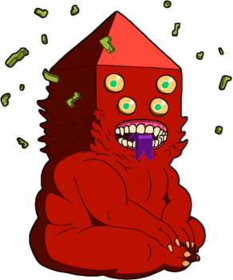

Finn
Descrição
Finn Mertens é um jovem guerreiro, presumivelmente o último humano vivo na Terra de Ooo que se aventura com seu melhor amigo e irmão adotivo Jake, o Cão. Finn é um herói disposto a tudo, que adora aventuras e não gosta de ver ninguém sofrer. Ele é o paladino jurado da Princesa Jujuba, soberana do Reino Doce, e tem a missão de protegê-la e o reino de ameaças.
Jake
Descrição
Jake é um cão buldogue dourado, de quatro anos, que tem poderes mágicos, como se esticar mudar de forma e reorganizar os órgãos internos. Ele é o melhor amigo de Finn e toca violino com a namorada Lady Íris. Jake é um personagem carismático e engraçado, que sempre dá conselhos e informações.
BMO
Descrição
BMO, um personagem do episódio de Hora de Aventura onde é apresentado como um videogame de Finn e Jake. BMO é capaz de falar, andar, dormir, se mexer e transportar pessoas para dentro de seus jogos.
Princesa Jujuba
Descrição
Princesa Jujuba é a governante do Reino Doce. Embora não fale muito sobre seu passado sabe-se que muitos de seus parentes são famosos. Fica implícito que Finn salvou a Princesa muitas vezes, embora ela acaba salvando-o em alguns episódios.
Marceline
Descrição
Apesar de sua primeira aparição demonstrar uma natureza antagonista, com o passar da série a personagem se torna uma amiga próxima de Finn e Jake, e vai evoluindo sua personalidade e relacionamentos. Ao contrário dos vampiros convencionais, ela não precisa de sangue para viver, apenas se alimentando da cor vermelha. Ela também é uma grande cantora e compositora musical.
Princesa do Fogo
Descrição
Princesa de Fogo tem uma personalidade volátil, ela geralmente tem um comportamento calmo, embora com tendências bastantes frequentes a oscilações súbitas e violentas de humor.
Princesa Caroço

Descrição
A Princesa Caroço é uma princesa que flutua como nuvem e é da dimensão da Terra do Caroço, lugar habitado por pessoas "Encaroçadas". Ela é como as pessoas encaroçadas em geral. Ela é metida, rude e mal educada, e usa a palavra "caroço" no lugar de palavrões e as vezes a palavra "gosma" no lugar de expressões.
Caracol
Descrição
O Caracol aparece em todos os episódios (excluindo o Piloto, "The Wand" e "Cadeia Alimentar"). Ele aparece escondido nos lugares e objetos sem foco da câmera.
Rei Gelado
Descrição
Rei Gelado é um velho, solitário, mandante sociopata do Reino Gelado que é obcecado em capturar princesas na esperança de que uma delas seja sua esposa, até ameaçando-as de morte caso se recusem.
Lich
Descrição
O Lich é uma Entidade Cósmica originada a partir do Cometa Catalisador que atingiu o planeta Terra durante o período cretáceo, reconhecido como a "personificação do mal", que tem como objetivo destruir toda a vida no Multiverso.
GOLB
Descrição
GOLB é uma entidade cósmica maléfica, reconhecido como a personificação do caos, sendo considerado um dos seres mais poderosos do Universo.